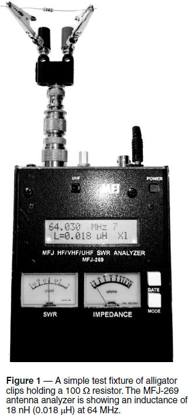
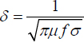
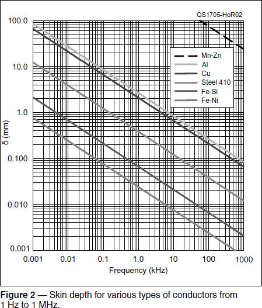
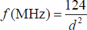
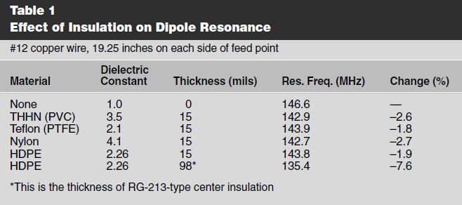

Experiment #172 — Wire Characteristics at RF
RF has a way of changing the behavior of even a lowly piece of wire, and this column presents three significant examples. You’ll never look at a piece of hookup wire the same way again.
Inductance and Parasitic Effects
Any time a current flows — whether through a wire or not — a magnetic field is created. If the current is flowing through a wire, the familiar “right-hand rule” shows how the field curls around it.1 This field, in turn, also interacts with the current in the wire, creating an electro-motive force (voltage). The interaction of current and magnetic field is called inductance, because changes in the field “induce” changes in voltage. The relationship is described by Lenz’s Law:
where L is the inductance, and Di/Δt is the rate of change in the current, often written in the language of calculus as di/dt. The value of L (in units of henries, H) is determined by the size and shape of the conductor. The minus sign shows that the voltage caused by the change in current opposes that change.
Calculating the exact inductance of any piece of wire turns out to be surprisingly complicated, because it depends on geometry so strongly. Even for straight wires, inductance changes non-linearly with length and thickness. For example, 10 inches of copper wire has an inductance of about 0.32 μH for #20 AWG, 0.12 μH for #10 AWG, and 0.11 μH for 0.5-inch rod. That #20 AWG wire has about 0.13 μH at a length of 5 inches and 0.02 μH for a 1-inch piece. Loop and coil inductances are even more complex. (The ARRL Handbook has charts and formulas for inductance of straight wires and single-layer coils.2)
You can measure inductance with an “L-C” meter, of course, but for the true RF experience, SWR analyzers, such as the MFJ-269 in Figure 1, can be used. You can see my simple component test fixture connected to the analyzer — a BNC-to-binding post adapter and a pair of alligator clips with fork terminals soldered to them. Attach the component to be tested to the clip leads and set the analyzer to measure inductance — a 100 Ω resistor exhibited 18 nH of inductance at about 64 MHz, for example. (These are not precision measurements — many factors affect the inductance value.)

Try a piece of wire about the same length as a resistor. (Resistance affects the analyzer measurement.) Follow your analyzer’s instructions and note the inductance. Without changing the frequency, shorten the wire and observe the change. Replace the wire with a longer piece and bend it into different shapes or even make a small coil. Bring metallic objects close to the wire — some magnetic (steel) and some not (aluminum) to see their effect. Touch the wire with a finger. Anything in the wire’s magnetic field will affect its inductance. Be aware of this sensitivity to nearby objects when building RF equipment!
Skin Effect and Resistive Loss
You may have heard the term skin effect. Not only do currents create external magnetic fields around a wire, but currents also create magnetic fields inside it! Forces from the interaction between fields and ac currents (similar to what makes a motor turn) move current from the interior to a thin layer near the surface. The higher the frequency, the thinner the layer in which most of the current flows. Inversely proportional to the square of frequency, f, the skin depth is:

where μ is the conductor’s permeability, and σ is the conductivity. Similar to RC and RL time constants, δ is the depth at which current falls to 1/e (about 37%) of its value at the surface.
Figure 2 shows skin depth versus frequency for several different types of metals from below ac power frequencies all the way to 1 MHz. For a copper wire, most of the current is flowing in a layer about 2⁄3 millimeters thick at 10 kHz and 1⁄5 millimeters at 100 kHz. Restricting current to this thin layer increases the resistance quite a bit. A good rule of thumb for copper and aluminum wire is that skin effect begins to have a significant effect on wire resistance above the frequency:


where d is the wire diameter in mils (1 mil = 0.001 inch). Above that frequency, resistance increases 3.2 times for each decade (10 times) of frequency.
Let’s work out an example for #14 AWG solid copper wire at 28 MHz. The wire has a diameter of 64.1 mils and 2.52 Ω of resistance per 1,000 feet. At dc, 10 feet of this wire would have a resistance of 0.025 Ω. The frequency at which the skin effect becomes significant is 124 / (64.1)2 = 30 kHz. 28 MHz / 30 kHz = 933 ≈ 3 decades (10 × 10 × 10), so the resistance increases to approximately 0.025 × 3.2 × 3.2 × 3.2 = 0.81 Ω. Would that be significant? Let’s say you wound a coil for a 10-meter band-pass filter from this wire. If the current in the coil was 10 A rms, the coil would dissipate I2R = 102 × 0.81 Ω or 81 W. This is one reason why large diameter wire or tubing is used in transmitting filters.
Effects of Insulation
What if the material next to the thin layer of metal carrying the RF current is not air? Even if the material is an insulator, we can still expect it to affect an RF current if its dielectric constant is different from air. Also known as relative permittivity, the dielectric constant tells us how much a material affects an electric field relative to that of a vacuum or dry air. (The relative dielectric constant for air is 1.0.)
Insulation’s higher dielectric constant increases capacitance along the wire, slowing the RF wave. This is best illustrated by using a model.
I created an EZNEC model (www.eznec.com) of a 2-meter dipole made with #14 AWG copper wire, 191⁄4 inches long on each side of the feed point. In free space and using bare wire, the resonant frequency was 146.6 MHz. I then changed to THHN household ac wire — a very popular antenna-building material. THHN insulation is mostly PVC with a very thin outer layer of clear nylon. For #14 AWG wire, the insulation thickness is approximately 15 mils. Without changing the wire length, the insulated dipole’s resonant frequency dropped by 2.6% to 142.9 MHz — completely out of the 2-meter band. Table 1 shows resonant frequencies with other types of insulation.3 You can observe this effect yourself by making a simple dipole or ground plane of solid insulated wire, measuring the resonant frequency, then removing the insulation entirely or in parts. You’ll find that the average effect from most types of insulation is to lengthen the wire electrically by 2 – 3%.

Notes
1The right-hand rule is explained at www.khanacademy.org/test-prep/mcat/physical-processes/magnetism-mcat/a/using-the-right-hand-rule.
2Available from your ARRL dealer, or from the ARRL Store, ARRL Item no. 0628. Telephone toll-free in the US 888-277-5289, or 860-594-0355, fax 860-594-0303; www.arrl.org/shop; pubsales@arrl.org.
3www.rfcafe.com/references/electrical/dielectric-constants-strengths.htm